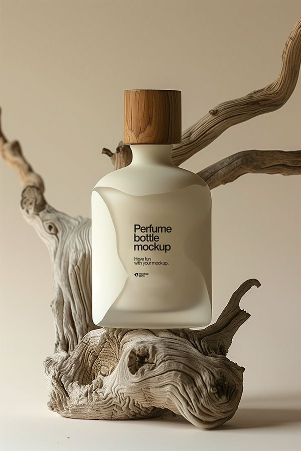
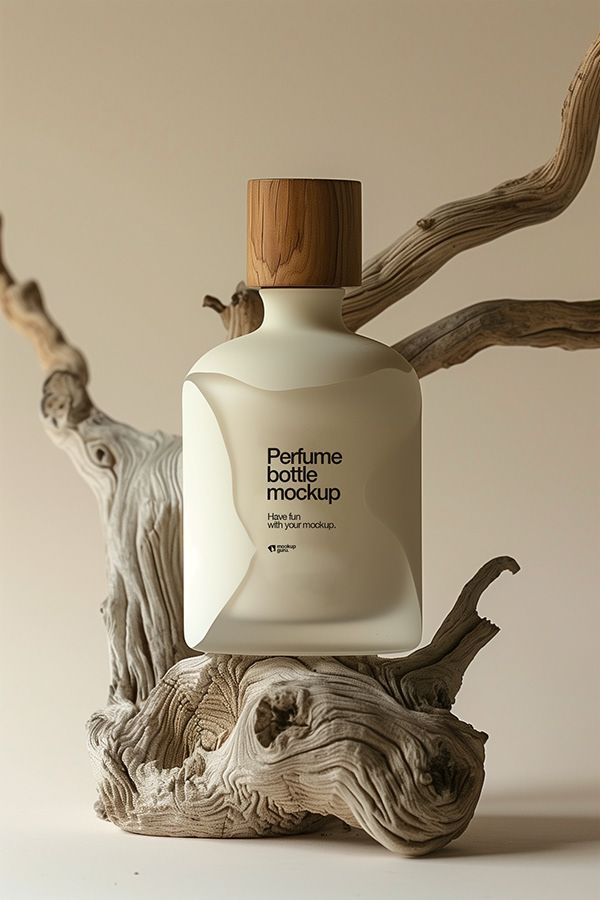

Isabelle Laurent was born in 1975 in Grasse, France, often referred to as the perfume capital of the world. Growing up surrounded by lush fields of jasmine, lavender, and rose, Isabelle was introduced to the art of perfumery at a young age. Her family, although not directly involved in the perfume industry, owned a small boutique that sold locally made fragrance oils. The scents of Grasse—their intensity, their allure—captivated Isabelle and sparked a lifelong passion for the art of fragrance.
Her initial fascination, however, wasn’t just with the perfumes themselves, but with the science behind them. Isabelle excelled in chemistry, particularly organic chemistry, and dreamed of combining her love for science with the emotional power of scents. This led her to study Pharmaceutical Chemistry at the University of Paris. While her peers focused on the practical applications of chemistry, Isabelle spent her free time experimenting with creating perfumes in her small apartment.
After completing her studies, Isabelle moved to Paris to pursue her dream of becoming a perfumer. She spent years working in laboratories, developing her craft by studying rare ingredients and learning from established perfumers. However, Isabelle was not content with just mastering existing techniques. Her goal was to break new ground—creating fragrances that blended the boundaries between tradition and innovation. She wanted perfumes that felt timeless, yet unexpected—luxurious, yet raw.
In 2005, after nearly a decade of research and experimentation, Isabelle founded Noire Essence. Her vision was clear: she wanted to create a brand that was not just about scent, but about the experience of wearing it. Noire Essence would be a reflection of her own philosophy—a belief that true beauty often lies in the darker, more mysterious aspects of life.
Isabelle’s vision for Noire Essence was inspired by her personal journey. Having spent years navigating both the brilliant and the shadowed sides of life, she felt that the world’s most beautiful emotions were often hidden beneath the surface. Whether it was the quiet strength of vulnerability or the seductive power of confidence, Isabelle believed that fragrances could encapsulate these complexities.
She was determined to craft perfumes that didn’t just smell good, but told a story—fragrances that could evoke memories, stir emotions, and even challenge the wearer to confront their own sense of self. Her creations are known for their intricate and layered compositions, where each note evolves over time, revealing deeper complexities.
Despite her success, Isabelle remains a somewhat elusive figure, staying out of the spotlight to let her work speak for itself. She is deeply committed to the artistry of perfumery, and while she occasionally appears at exclusive events or perfume exhibitions, she prefers to spend her time in the lab, constantly refining her craft.
Under Isabelle’s leadership, Noire Essence has become synonymous with sophistication, elegance, and the art of fine perfumery. Her work has been recognized globally, not just for its artistry, but for its bold approach to pushing the boundaries of traditional fragrance-making.
Even today, as the brand expands, Isabelle remains the creative heart of Noire Essence, always searching for new ways to innovate and stay true to her initial vision: to create perfumes that are not just worn, but lived.
Noire Essence is not just a fragrance brand—it’s an experience. Established in 2005 by visionary perfumer Isabelle Laurent, the brand quickly became synonymous with the fusion of art and science, combining the complexity of traditional perfumery with modern sensibilities. Noire Essence has carved out a unique space in the world of luxury perfumes, where the darker and more enigmatic facets of scent are embraced and celebrated.
The essence of Noire Essence lies in its understanding of contrast. The name “Noire” (meaning “black” in French) symbolizes the allure of darkness, while “Essence” refers to the true nature of the brand’s commitment to the purest, most potent ingredients. This philosophy is not just present in the fragrances themselves but is reflected in the entire brand ethos. Each scent captures a journey through light and shadow, evoking a sense of mystery, luxury, and depth. The brand focuses on complexity and emotional depth, creating fragrances that do more than just please the senses—they connect with the soul.
The house embraces the idea that fragrance can capture emotions, moments, and memories, offering a sensory experience that is as much about discovery as it is about enjoyment.
Noire Essence remains at the cutting edge of perfumery, constantly innovating while staying true to its roots. Under the visionary leadership of Isabelle Laurent, the brand has become a symbol of dark elegance, where fragrances are not just worn, but felt and experienced. Noire Essence will continue to push boundaries, offering future generations of perfume lovers scents that challenge convention and spark the imagination
 
